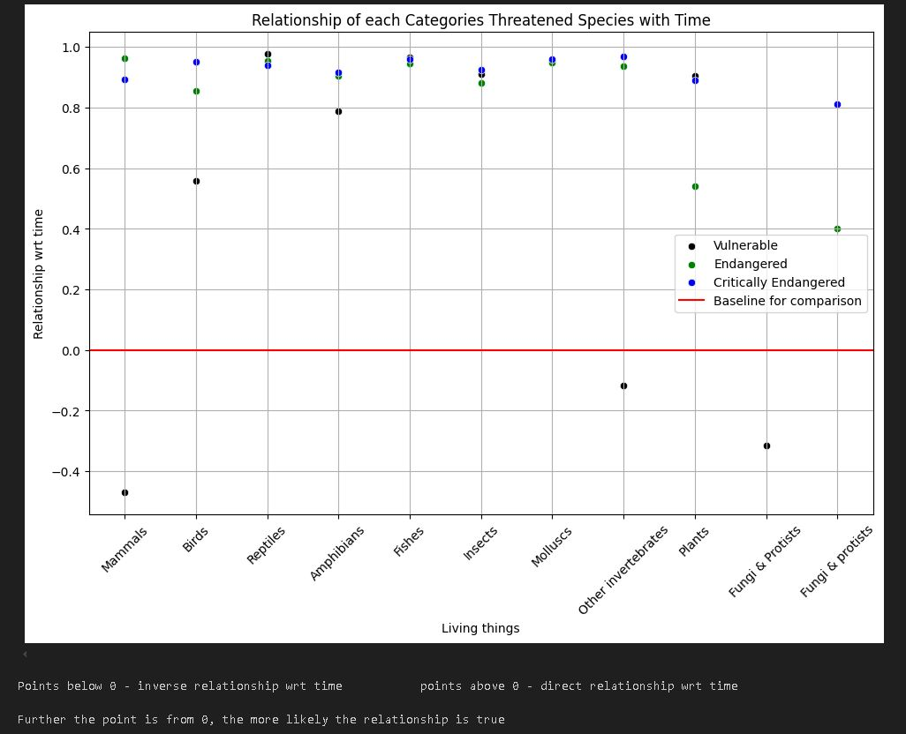

Why Biodiversity Matters
The biodiversity sector is crucial for maintaining ecological balance, supporting food security, and sustaining livelihoods. It provides essential services like pollination, climate regulation, and medicine. Protecting biodiversity ensures resilience against environmental changes and prevents species extinction. A healthy ecosystem benefits both nature and human well-being, making conservation efforts vital.
Our Analysis
Our data analysis reveals a strong positive correlation between time and the number of vulnerable, endangered, and critically endangered species across most categories. This suggests that despite conservation efforts, the number of at-risk species continues to rise. However, certain categories, such as mammals and other invertebrates, show variations in trend patterns, highlighting the need for category-specific conservation strategies.
Interestingly, fungi and protists also show a unique trend, possibly due to a lack of historical data or recent advancements in species classification. The inverse trend in some categories suggests potential successful conservation efforts or underreporting in certain species groups.